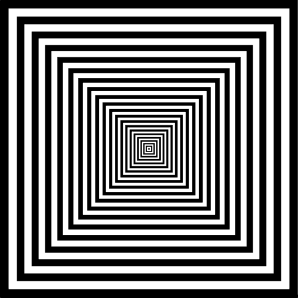

kliknij aby skoczyć na środek strony
kliknij aby skoczyć na koniec strony
Tutaj jest link do formularza
Tutaj jest link do pliki
Tutaj jest link do tabela
Tutaj jest link do poczty
Zadanie 1
Lukasz Celemr
Celmer
Celmer
Celmer
Celmer
Celmer
Celmer
Celmer
Celmer
Celmer
Celmer
Celemr
Celmer
Celmer
:( smutek
:D szczescie
:/
:0 zdziwienie
:,(
:| smutek
Zadanie 2
Adres:40-132 Gdynia 30 Maja 09-102
Ulubiony aktor: Johnny Depp
Ulubiony zespół‚ muzyczny: hair
Data urodzenia: 14 grudnia 2030
H2SO4
x*x=x2
kliknij aby skoczyć na początek strony
kliknij aby skoczyć na koniec strony
Zadanie 3

Zadanie 4

Poniżej są trzy wyliczenia z różnymi znakami wyliczenia
Ty zaproponuj swoje, związane z informatyką

- Przekreślenie:
- Indeks górny: < sup> < /sup>
- Indeks dolny: < sub> < /sub
- Przejście no nowego wiersza w tekście: < /br>
- Zapobieganie automatycznemu przenoszeniu fragmentu tekstu do nowego wiersza: < nobr> < /nobr>
- Spacja niełamliwa: & nbsp
Poniżej są trzy numerowania z różnymi znakami numerowania
Ty zaproponuj swoje związane z informatyką
Nagłówki w tekście strony WWW.
- < H1> Będzie największym nagłówkiem
- < H2>....< H5> Będzie coraz mniejsze
- < H6> Będzie najmniejszym nagłówkiem
Możliwość funkcji font.
- < font size ="wielkość czcionki np.3">
- < font color ="kolor (po angielsku) czcionki np.blue">
- < font face ="rodzaj czcionki np.AriaL
Najprostsze rodzaje kolorów do użycia w funkcji font.
- Nazwą: red-czerwony, green-zielony, blue-niebieski
- RGB: rgb(255,0,0)-czerwony, rgb (0,255,0)- zielony, rgb(0,0,255)- niebieski
- Hexadecymalny,#RRGGBB: #FF0000-czerwony,#00FF00-zielony,#0000FF-niebieski
Poniżej będą trzy poziomy numerowania/wyliczenia z różnymi rodzajami numerowanie/wyliczania
Ty zaproponuj swoje związane informatyką
- Popularne Interfejsy urządzeń peryferyjnych do komputera:
- Interfejsy na przesył‚ obrazu
- HDMI
- Type-E Zawiera blokującą ochronę aby kabel Typu Standard się nie ruszał
- DVI
- DVI-I Przesyła dane cyfrowe i analogowe
- DVI-D Przesyła dane cyfrowe
- DVI-I Przesyła dane analogowe
- D-SUB
- DE-9M Standard bez śrub mocujących
- DE-15F Złącze VGA, SVGA i XGA
- Interfejsy na przesył‚ audio
- Jack
- Interfejst na przesył‚ danych
- USB
kliknij aby skoczyć na początek strony
kliknij aby skoczyć na środek strony